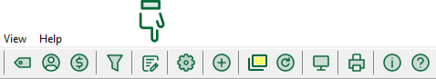

Выклічце прыладу Дыспетчар справаздачы або выкарыстоўвайце галоўнае меню Прылады → Дыспетчар справаздачы… .
Ёсць 2 варыянты.

Для MMEX версіі 1.4.0 ёсць магчымасць пераноса дат у сцэнарый SQL справаздачы. Даступныя чатыры варыянты: &single_date, &begin_date, &end_date, &budget_years. У выпадку, калі SQL змяшчае адзін з параметраў вышэй, ён будзе заменены датай з календара. Напрыклад, гэты сцэнар SQL вяртае ўсе рэшткі рахункаў за паказаную дату:
with b as (
select ACCOUNTID, STATUS
, (case when TRANSCODE = 'Deposit' then TRANSAMOUNT else -TRANSAMOUNT end) as TRANSAMOUNT
, TRANSDATE
from CHECKINGACCOUNT
union all
select TOACCOUNTID, STATUS, TOTRANSAMOUNT ,TRANSDATE
from CHECKINGACCOUNT
where TRANSCODE = 'Transfer'
)
select a.ACCOUNTNAME,
total(TRANSAMOUNT) + a.INITIALBAL as Balance
from ACCOUNTLIST as a, b
where a.STATUS = 'Open'
and b.ACCOUNTID = a.ACCOUNTID
and b.STATUS <> 'V'
and b.TRANSDATE <= '&single_date'
group by a.ACCOUNTNAME order by a.ACCOUNTNAME asc;

Ёсць шмат справаздачаў, прадастаўленых карыстальнікамі або распрацоўшчыкамі на GitHub
Калі Вы стварылі карысную справаздачу, яна можа быць экспартаваная ў zip-файл.